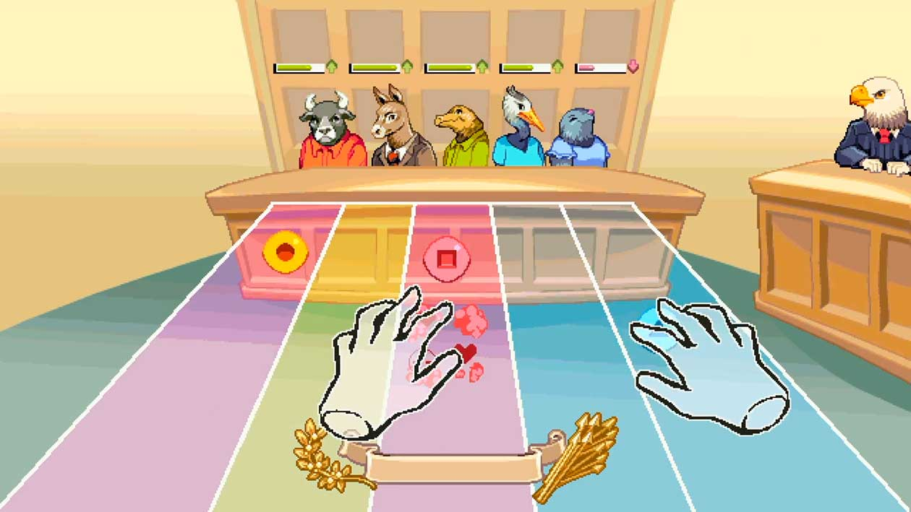

Seventh Amendment
In Suits at common law, where the value in controversy shall exceed twenty dollars, the right of trial by jury shall be preserved, and no fact tried by a jury, shall be otherwise re-examined in any Court of the United States, than according to the rules of the common law.
Arnab Chakravarty, Ian McNeely, and Moaw!
Verbal Gymnastics, 2022
Arcade cabinet with a single screen, computer, webcam, and sound
Cabinet dimensions 29.5 inches wide by 29.5 inches deep by 78.75 inches high
Artist Commentary
Verbal Gymnastics is a single-player, motion-activated arcade game. Built as an arcade cabinet, the game features a gesture-based interface where players’ hands are tracked by a camera and projected on the screen. The gameplay draws its inspiration from rhythm games and challenges players to collect colored orbs to impress the five jury members. In each of three rounds, the game presents the player with five tracks (one track each for each jury member) and a stream of approaching orbs that the players have to use their hands to collect.[JS10] Each jury member has a preference for and dislike of particular colors, and players avoid catching orbs that jury members dislike on their track. As the players collect the right orbs without catching the incorrect ones, they build up a streak, which increases the impact of their performance on the jury and thereby on the final verdict.
By establishing a constitutional right to a trial by jury, the Seventh Amendment introduces the wildest and most unpredictable of variables into the American civil-justice system: human beings. With Verbal Gymnastics, we aimed to create a bespoke arcade game that facilitates the exploration of that human element. Why an arcade game? They’re exceptionally inclusive and engaging. Like jury trials, arcade games have a performative component. They are public spectacles that welcome an audience and invoke discussion. They’re easy for a casual participant to learn but challenging to master. And the structure of our arcade game is replayable across multiple cases with exciting decisions and varied results. We are daring players to experiment and explore civil-jury trials, seeking new outcomes and pioneering new high scores.
There is also a broader question we hope audiences will examine: “Was justice served?” These are the words that conclude each game of Verbal Gymnastics. They point to the paradoxical nature of a system of law that tasks imperfect people with pursuing a perfect ideal. And since the Seventh Amendment endows ordinary people with the power to award or deny justice, we must cultivate curiosity about justice in ordinary people.
Curator Commentary
The Seventh Amendment invests authority in the truth-deciphering skills of a jury. Inside of this is an assumption that a group of individuals can discern truth from the flow of narratives and evidence of the two parties. Though not applied to states, the social form of the jury trial—one not elaborated upon in any detail within the amendment’s fifty-one words beyond the hand-waving toward whatever might be implied as “common law”—became sacrosanct in court trials. The stakes are high for a jury’s ability to perform this duty. How does one ensure that a jury will indeed locate the truth and pass down the appropriate verdict?
Using the play idiom of Bemani games—otherwise known as rhythm games, like Dance Dance Revolution or Rock Band—Verbal Gymnastics poses these questions as a playable reflection on what passes muster with a jury. The work explores two questions: What if a jury based its decisions on gestures rather than words? Would expectations of fact, truth, innocence, and guilt change?
Players find themselves having to perform their innocence for a jury of creatures. Dressed quite regally, perhaps in a nod to the interpretation of “common law” based on seventeenth-century English law, the Verbal Gymnastics jurors bring with them the idiosyncrasies one might expect from a jury. Players enact their innocence before the jury by performing a series of requested hand gestures. Jurors then interpret the player’s truthfulness and pass judgment accordingly.
Despite its cute characters and disarming play, the game mirrors the real challenges of putting one’s fate into the hands of a jury. If the decision of a jury is absolute—something debated but not overturned—how do we ensure a jury makes equitable and fair decisions? Why do we believe the “magic circle” of a court proceeding invests jurors with truth-telling powers that override their biases and beliefs? For those studying games, the phrase “magic circle” holds special meaning. Derived from the medieval historian and moralizing theorist Johan Huizinga’s Homo Ludens: A Study of the Play-Element in Culture, the phrase speaks to the situations in which people determine to abide by customs that may not apply to other moments of our lives. The magic circle was only one of a number of situations Huizinga notes as locations where “special rules obtain”: tennis courts, temples, stages, card tables, and courts of justice. From this list, game designers, theorists, and scholars homed in on the magic circle as the stand-in for the ways in which people adopt different values and rules inside of certain situations and contexts. Huizinga recognized the imperative of those with important roles inside a court of justice to behave differently, to set aside the daily, and to accept their place in “temporary worlds within the ordinary world, dedicated to the performance of an act apart.”
In the case of a jury, this act apart is impartial evaluation of a case. But as game scholars and theorists have noted, there is no clean departure from the ordinary world. We can’t set aside who we are and how we are in order to carry out an “act apart.”
Arnab Chakravarty is a designer, technologist and educator with a background in building interfaces for communities overlooked by dominant technology platforms. Previously, he worked as an ethnographer and designer in several multinational organizations; at NYU ITP, his interests have focused on living with the things that he makes, creating immersive experiences for co-liberation, and discovering what makes people touch things. His work has been shown at venues including FAB:Learn, No:Quarter, Bengaluru MakerFaire, Kochi Biennale, and NYC Media Lab.
Ian McNeely holds an MFA in Theater Arts from Brown University, where he wrote and produced a series of original rock operas. McNeely was awarded the Oregon Shakespeare Festival's 2009 Rex Rabold Fellowship and delivered the keynote speech at their annual HIV/AIDS fundraiser The Daedalus Project. He is the founder and artistic director of Broken Ghost Immersives, which produces theatrical events inspired by games.
Moaw! is a video game developer specializing in pixel art. They work to build creative communities through game development, bridging dialogues between STEM and art, and have worked professionally with many companies to make games and pixel-art advertisements. Outside of commercial work, they design open-source game development assets and engage in accessible education initiatives such as workshops and events through RVA Game Jams and Tutorial Stage. More recently, they were working as a remote-education consultant for CodeVA and you can discover more about their work at moaw.art.
1
Freedom of Religion, Speech, Press, Assembly, Petition
Congress shall make no law respecting an establishment of religion, or prohibiting the free exercise thereof; or abridging the freedom of speech, or of the press; or the right of the people peaceably to assemble, and to petition the Government for a redress of grievances.
2
The Right to Bear Arms
A well regulated Militia, being necessary to the security of a free State, the right of the people to keep and bear Arms, shall not be infringed.
3
The Housing of Soldiers
No Soldier shall, in time of peace be quartered in any house, without the consent of the Owner, nor in time of war, but in a manner to be prescribed by law.
4
Unreasonable Search and Seizure, Warrants, Probable Cause
The right of the people to be secure in their persons, houses, papers, and effects, against unreasonable searches and seizures, shall not be violated, and no Warrants shall issue, but upon probable cause, supported by Oath or affirmation, and particularly describing the place to be searched, and the persons or things to be seized.
5
Due Process, Self-Incrimination, Eminent Domain
No person shall be held to answer for a capital, or otherwise infamous crime, unless on a presentment or indictment of a Grand Jury, except in cases arising in the land or naval forces, or in the Militia, when in actual service in time of War or public danger; nor shall any person be subject for the same offence to be twice put in jeopardy of life or limb; nor shall be compelled in any criminal case to be a witness against himself, nor be deprived of life, liberty, or property, without due process of law; nor shall private property be taken for public use, without just compensation.
6
Rights of Defendents in Criminal Trial
In all criminal prosecutions, the accused shall enjoy the right to a speedy and public trial, by an impartial jury of the State and district wherein the crime shall have been committed, which district shall have been previously ascertained by law, and to be informed of the nature and cause of the accusation; to be confronted with the witnesses against him; to have compulsory process for obtaining witnesses in his favor, and to have the Assistance of Counsel for his defense.
7
Rights in Civil Cases
In suits at common law, where the value in controversy shall exceed twenty dollars, the right of trial by jury shall be preserved, and no fact tried by a jury, shall be otherwise re-examined in any court of the United States, than according to the rules of the common law.
8
Excessive Bails, Fines, or Punishment
Excessive bail shall not be required, nor excessive fines imposed, nor cruel and unusual punishments inflicted.
9
Additional Fundamental Rights of People
The enumeration in the Constitution, of certain rights, shall not be construed to deny or disparage others retained by the people.
10
Separation of Powers and Federalism
The powers not delegated to the United States by the Constitution, nor prohibited by it to the States, are reserved to the States respectively, or to the people.